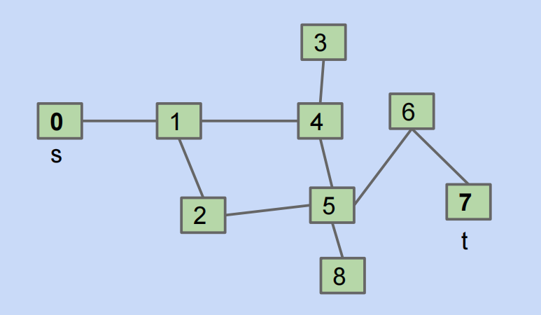
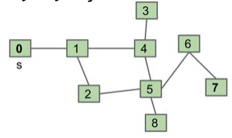

Chapter9 Graph
Tree Iteration Traversal（树的迭代遍历）¶
在引入图这种数据结构之前，我们先讨论如何在树结构上进行迭代或遍历。和线性结构不同，树本身没有单一的“自然”顺序，所以我们需要 traversal 的概念，而不是简单的 iteration。树遍历的自然方式有以下几种：
- 层序遍历(Level order traversal)，树的广度优先遍历(Breadth-First Traversal，简称BFS)就是层序遍历。
- 深度优先遍历(Depth-First Traversal)，包括三种变体：前序遍历(pre-order)、中序遍历(in-order)和后序遍历(post-order)
这些遍历并不是随意定义的，而是基于递归结构，先处理子树再处理当前节点或者相反。
层序遍历(Level Order Traversal)¶
层序遍历的思路是按层级从上到下、从左到右访问节点。
层序遍历的实现比较难，因为我们需要跟踪当前层级，我们通常使用队列来实现，基本步骤如下：
- 首先将根节点入队
- 当队列不为空时：
- 从队列中取出一个节点并访问它
- 将该节点的所有子节点（先左后右）依次加入队列
- 重复上述步骤，直至队列为空
下面我们给出代码示例：
List<Integer> leverOrder(TreeNode root){
// 初始化队列，并加入根节点
Queue<TreeNode> queue = new LinkedList<>();
queue.add(root);
// 初始化一个列表，用于保存遍历序列
List<Integer> list = new ArrayList<>();
while(!queue.empty()){
TreeNode node = queue.poll(); // 队列出队
list.add(node.val);
if(node.left != null){
queue.offer(node.left); // 左子节点入队
}
if(node.right != null){
queue.offer(node.right); // 右子节点入队
}
}
return list;
}
前序遍历(Pre-order Traversal)¶
前序遍历的思路是从根开始，先访问（打印）当前节点，然后递归左子树，再递归右子树。这里的前序指的是访问节点在递归子树之前，伪代码如下：
中序遍历(In-order Traversal)¶
中序遍历的思路是先递归左子树，再访问当前节点，然后再递归右子树。这里的中序是指访问当前节点的逻辑在递归左右子树之间，伪代码如下：
后序遍历(Post-order Traversal)¶
后序遍历的思路是先递归左子树，再递归右子树，然后访问当前节点。这里的后序是指访问当前节点的逻辑在递归左右子树之后，伪代码如下：
postOrder(BSTNode x){
if(x == null){
return;
}
postOrder(x.left);
postOrder(x.right);
print(x.key);
}
图（Graph）¶
树是一种很好的数据结构，但是它也有一些限制，比如“任意两个节点之间只有一条路径“、“无环”，而有些节点-边的结构违反了这条规则，自然它们也就不是树，现实中也多有循环或者多路径的情况。如果我们在树的基础上去除路径约束，允许任意连接，就会形成图这种数据结构，下面我们给出图的定义。
图是一种非线性数据结构，由顶点(vertex/node)和边(edge)组成，我们可以将图 \(G\) 抽象地表示为一组定点 \(V\) 和一组边 \(E\) 的集合，例如 $$ V={1,2,3,4,5}\ E={(1,2),(1,3),(1,5),(2,3),(2,4),(2,5),(4,5)}\ G={V,E} $$ 如果我们将顶点看作节点，将边看作连接各个节点的引用（指针），我们就可以将图看作一种从链表拓展而来的数据结构。相较于线性关系的链表和分治关系的树，网络关系的图的自由度更高，也更为复杂。
通常来说，图分为简单图(simple graphs)和多图(multigraphs)，简单图是指满足以下两个条件的图：
- 无多重边(multiple edges)：即两个节点间不能有两条或更多不同的边
- 无自环(self-loops)：节点不能有连接自身的边
在课程中我们默认是简单图，除非特别说明。
说明
对简单图的分类有无向图和有向图、无环图和有环图，是离散数学里面的一些概念，这里就不详细说明了。
Graph Problems¶
图结构产生了很多的有趣的问题，从简单的路径检测到复杂的优化，我们可以提出很多问题，例如：
- s-t 路径(s-t Path)：顶点s和t之间是否有路径
- 连通性(Connectivity)：图是否连通？也即是否所有顶点间都有路径？
- 双连通性(Biconnectivity)：是否存在一个顶点，其移除会使图断开？
- 最短 s-t 路径(Shortest s-t Path)：s到r的最短路径是什么？
- 循环检测(Cycle Detection)：图中是否有循环？
- Euler回路(Euler Tour)：是否存在一个循环，使得每一条边恰好出现一次？
- Hamilton回路(Hamilton Tour)：是否存在一个循环，使得每个顶点恰好出现一次？
- 平面性(Planarity)：能否在纸上绘制图而使得无边的交叉？
- 同构(Isomorphism)：两个图是否同构？
我们通常很难去区分哪些图的问题比较难，那些不太难，有些问题可能已经高效地解决了，有些仍然是open的难题。比如欧拉回路和哈密顿回路，欧拉回路是一个在1873年就被解决的问题，其解的时间复杂度为 \(O(E)\)，其中 \(E\) 是图中边的数量。而哈密顿回路至今仍然没有人能高效地解决它，目前已知的最好的算法的时间复杂度是指数级的。
s-t Path 问题（Depth-First Traversal）¶
即给定一个起点 \(s\) 和一个终点 \(t\)，是否存在从 \(s\) 到 \(t\) 的路径，即要编写函数 connected(s,t)，返回是否存在路径，这其实要求我们以某种方式去遍历整个图（事实上是 DFS 深度优先遍历），我们可能会想到这么一个递归的算法：对于 connected(s,t)
- Does s==t? If so, return true.
- Otherwise, if connected(v,t) for any neighbor v of s, return true.
- Return false.
但事实上这个算法是有问题的，我们考虑如下的图：

这事实上会让我们陷入一个无限循环，例如以0为起点：
connected(0,7)：- Does 0==7? No,so...
- if(connected(1,7)) return true;
connected(1,7)：- Does 1==7? No,so...
- if(connected(0,7))... get an infinite loop
那么我们应该如何去修复这个问题呢？方案是标记已经访问了的节点，这样的 connected(s,t) 伪代码如下：
mark s // mark that we have already visited s
if(s==t):
return true;
for child in unmarked_neighbors(s): // if a neighbor is marked, then ignore it!
if isconnected(child,t):
return true;
return false
mark可以用bool数组或者set来实现，防止重新访问，具体的例子可以参考这个demo
事实上，我们刚刚编写的这个 connected() 函数本质上是图的深度优先遍历（DFS），类似于树的 pre-order/in-order/post-order traversal。因为其遍历过程大致是这样的：
- 首先标记自己，然后访问第一个邻居
- 第一个邻居标记自己，再访问其邻居
- 邻居的邻居标记自己，继续深入
这就与树的深度优先遍历非常类似，其时间复杂度为 \(O(V+E)\)，这里 \(V\) 是顶点数，\(E\) 是边数
图的深度优先遍历又可以分为 DFS Preorder（前序深度优先遍历）和 DFS Postorder（后序深度优先遍历）。
DFS Preorder是深度优先搜索的一种变体，先访问当前节点（执行动作例如print或设置 edgeTo），然后递归地遍历其未访问的邻接节点，详细过程如下：
- 从起点（根或源节点）开始，标记当前节点
- 执行动作（例如记录当前节点或者设置路径前驱）
- 递归地深入第一个未访问的邻接节点，重复上述过程
- 返回后处理下一个邻接节点
在上图中 DFS Preorder访问的顺序是0 1 2 5 4 3 6 7 8（实际上是调用 dfs 的顺序）
DFS Postorder 是深度优先搜索的另一种变体，其先递归遍历所有未访问的邻居，然后访问当前节点（执行动作），其详细过程如下：
- 从起点开始，标记当前节点
- 递归遍历所有未访问的邻居
- 返回后执行动作
在上图中 DFS PostOrder 的顺序是3 4 7 6 8 5 2 1 0（自底向上，实际上是 dfs return 的顺序）
Breadth-First Traversal¶
BST Order 是广度优先搜索的遍历顺序，其按照距离从起点向外扩展，先访问所有当前层的邻接节点，再进入下一层，可以使用队列实现，类似于树的层序遍历，详细过程如下：
- 从起点入队，标记为访问
- 出队当前节点，访问其所有未访问的邻居
- 重复直至队列为空
在上图中 BFS Order 的顺序是0 1 24 35 68 7
Tip
需要说明的是，在图的DFS或者BFS中，当一个节点有多个未访问的邻居时，如果邻居没有按照固定的顺序存储，那么算法选择下一个处理的对象的选择顺序可能是任意的，也即图遍历的顺序可能不是唯一的。对于 DFS 来说，不同顺序会改变探索的路径，但是结果（例如可达性等等）不会发生改变；BFS 不同顺序会改变层内节点访问的次序，但是最短的路径层数不会发生改变
Graph Traversal Implementations¶
Shortest Paths（最短路径问题）¶
给定一个图（无权重图），如何从起点 s 找到到所有其他节点的最短路径，需要给出通用的算法。
Tip
对于无权重图的最短路径问题，BFS 是更好的选择，因为 BFS 按距离访问节点，保证了第一个到达某个节点时的路径是最短的，天然适合最短路径问题。
对于这样的最短路径问题，使用 BFS 的算法如下：
- Initialize a queue with a starting vertex s and mark that vertex.
- Repeat until queue is empty:
- Remove vertex v from the front of the queue
- For each unmarked neighbor n of v:
- Mark n
- Set edgeTo[n] = v, (and distTo[n] = distTo[v] + 1 if we want to track distance)
- add n to end of queue.
可以查看这个demo。如果是有权图，BFS 就并不适合了，因为 BFS 实际上假设所有的边等长。
Graph API¶
接下来我们讨论如何在代码上实现图与图算法，首先我们要考虑 API(Application Programming Interface) 和用于表示图的底层数据结构，不同的选择会对时间复杂度、空间复杂度以及实现算法的难度产生深远的影响。
API 是一系列可供我们使用的方法的列表，包括方法签名以及它们行为相关的信息，对于图的 API，我们做以下约定：无论节点的原始标签是什么，我们都用整数0,1,2等等进行编号，并通过 Map<Label,Integer>映射标签到整数，从而简化实现，避免泛型的复杂性。
public class Graph{
public Graph(int V); // 构造函数，创建有 V 个节点的空图
public void addEdge(int v, int w); // 添加边 v-w(无向图，同时也添加了w-v)
Iterable<Integer> adj(int v); // 返回 v 的邻居节点迭代器
int V(); // 返回节点数
int E(); // 返回边数
...
}
对于上述 API，要求节点数 V 必须提前指定，并且其不支持节点或边权重，无直接方法获取节点的度数，需要我们手动计算，例如：
public static int degree(Graph G, int v){ // 计算节点度数
int degree = 0;
for(int w : G.adj(v)){
degree += 1;
}
return degree;
}
public static void print(Graph G){ // 打印图
for(int v = 0; v < G.V(); v += 1){
for(int w : G.adj(v)){
System.out.println(v + "-" + w);
}
}
}
Graph Representations¶
用于实现图的底层数据结构通常有三种：邻接矩阵(Adjacency Matrix)、边集(Edge Sets)、邻接表(Adjacency Lists)。
邻接矩阵使用二维的 bool 数组或 int 数组，G[w][v] == true 表示边 v-w 存在，并且对于无向图，显然邻接矩阵是一个对称阵，也即有 G[w][v] == G[v][w]，而 adj(v) 的实现逻辑即返回行 v 的迭代器，扫描整行找出为 true 的值，时间复杂度为 \(\Theta(V)\) 。邻接矩阵的优点和缺点也很明显，优点是其检查边是否存在的时间复杂度为 \(\Theta(1)\)，但缺点是其空间复杂度为 \(\Theta(V^2)\)，在图稀疏的时候会造成很大的空间浪费。
边集意指用一个集合来存储所有的边，例如 HashSet<edge>，其中 edge 是 (int,int) 对，对于边集 adj(v) 的实现逻辑即扫描所有 \(E\) 条边，找出以 v 开头的，所以其时间复杂度为 \(\Theta(E)\)，其优点在于实现简单，空间复杂度为 \(\Theta(E)\)，没有太多的空间浪费，但时间复杂度较大。
邻接表这是以列表为元素的数组，数组的大小为图 \(G\) 的节点数 v，adj[v] 是节点 v 的邻居列表。adj(v) 的实现逻辑即直接返回 adj[v] 的迭代器，其时间复杂度为 \(\Theta(degree(v))\)。邻接表的优势在于其空间复杂度为 \(\Theta(V+E)\)，并且邻居迭代也非常的高效，也是最常用的。通常来说，图是稀疏的，所以 \(E \ll V^2\)。
Tip
我们来详细分析一下邻接矩阵和邻接表打印所有的边的时间复杂度：
邻接矩阵
外层是 \(V\) 次循环很显然，我们主要分析一下内层的时间复杂度，这里 G.adj(v) 需要遍历所有的节点去找到 v 的邻接节点，返回迭代器，其时间复杂度为 \(\Theta(v)\)，而 int w : G.adj(v) 这个 for-each loop 则需要 \(\Theta(degree(v))\) 的时间，所以对于内层循环，总时间是 \(\Theta(v)+\Theta(degree(v))\)，由于 \(degree(v)\leq v\)，\(\Theta(v)\) 是主导项，故内层总时间复杂度为 \(\Theta(v)\)，嵌套循环的总时间复杂度为 \(\Theta(V^2)\)
邻接表
对于邻接表的情形，外层仍然是遍历 \(V\) 个节点，而内层循环 G.adj(v) 直接返回 adj[v] 的迭代器，无需进行额外的扫描，所以迭代 adj[v] 的时间复杂度为 \(\Theta(degree(v))\)，又 \(\sum degree(v) = 2E\)，所以内层实际上是 \(2E\) 次，总的时间复杂度为外层 \(V\) 次+内层 \(2E\) 次，即 \(\Theta(V+E)\)。对于稀疏图，\(E\ll V^2 (，通常又 \(E\approx O(V)\)；对于密集图，\)E\) 接近 \(V^2\)（对完全图来说有 \(E=\frac{V(V-1)}{2}\)），此时 \(\Theta(V+E) \approx \Theta(V^20)\)
总结一下 Runtime of some basic operations for each representation:
| data structures | addEdge(s,t) | for(w:adj(v)) | print() | hasEdge(s,t) | space used |
|---|---|---|---|---|---|
| adjacency matrix | \(\Theta(1)\) | \(\Theta(V^2)\) | \(\Theta(V^2)\) | \(\Theta(1)\) | \(\Theta(V^2)\) |
| list of edges | \(\Theta(1)\) | \(\Theta(E)\) | \(\Theta(E)\) | \(\Theta(E)\) | \(\Theta(E)\) |
| adjacency list | \(\Theta(1)\) | \(\Theta(1) \sim \Theta(V)\) | \(\Theta(V+E)\) | \(\Theta(degree(v))\) | \(\Theta(E+V)\) |
一个简单的无向图的实现如下：
public class Graph{
private final int V; // final修饰代表不可改变、不可继承/重写、不能被继承
private List<Integer>[] adj;
public Graph(int V){
this.V = V;
adj = (List<Integer>[]) new ArrayList[V];
for(int v = 0; v < V; v++){
adj[v] = new ArrayList<Integer>();
}
}
public void addEdge(int v, int w){
adj[v].add(w);
adj[w].add(v);
}
public Iterable<Integer> adj(int v){
return adj[v];
}
}
Graph Traversal Implementations and Runtime¶
Decoupling Type from Processing¶
图算法常见的设计模式是将图的表示(Graph类)和处理算法（如路径查找等）解耦，避免将算法嵌入到Graph类中，而是创建一个独立的客户端类（例如Paths）来处理图：
- Create a graph object
- Pass the graph to a graph-processing method(or constructor) in a client class.
- Query the client class for information
例如：
public class Paths{
public Paths(Graph G,int s): // Find all paths from G
boolean hasPathTo(int v): // is there a path from s to v
Iterable<Integer> pathTo(int v): // path from s to v(if any)
}
然后我们可以像这样调用：

这样的解耦使得Graph类保持简单，只需要负责表示图，而算法逻辑则移到客户端类中，便于扩展不同的算法
DepthFirstPaths Implementations and runtime¶
DFS 算法使用递归实现，目的是从起点 s 找到到达每个可达定点的路径，并使用两个数组来存储结果：
boolean[] marked：marked[v] = true表示v与s连通（已访问）int[] edgeTo：edgeTo[v]=w表示路径上的v的前一个顶点是w
其示例代码如下：
public class DepthFirstPaths{
private boolean[] marked;
private int[] edgeTo;
private int s;
public DepthFirstPaths(Graph G, int s){
// 初始化 marked 和 edgeTo 数组，长度均为 V
marked = new boolean[G.V()];
edgeTo = new int[G.V()];
this.s = s;
dfs(G,s); // 以 s 为起点进行 DFS
}
void dfs(Graph G, int s){
marked[s] = true;
for(int w : G.adj(s)){
if(marked[w] == true){
continue;
}
edgeTo[w] = s; // 记录路径
dfs(G,w); // 递归访问
}
}
public boolean hasPathTo(int v){
return marked[v];
}
public Iterable<Integer> pathTo(int v){
if(!hasPathTo(v)){
return null;
}
List<Integer> path = new ArrayList<>();
for(int x = v; x != s; x = edgeTo[x]){ // 从v回溯到s，构建列表
path.add(x);
}
path.add(s);
Collections.reverse(path); // 反转列表
return path;
}
}
下面我们分析DFS的时间复杂度，如果我们是基于邻接表的，可以给出构造函数的一个时间复杂度上界 \(O(V+E)\)，这是因为每个节点至多访问一次(\(O(V)\)次dfs调用)，每个边也至多访问两次（marked[w]检查），有人可能会提出这样一个问题，我们在dfs调用的时候访问的节点之间肯定是存在边的，所以dfs调用次数 $\leq $ E，那我们是否能给一个更紧的上界 \(O(E)\) 呢？这是不行的，因为构造函数会初始化 marked 数组，将 \(V\) 个元素置为 false，时间复杂度为 \(\Theta(V)\)。DFS 的空间复杂度为 \(\Theta(V)\)，因为需要长度为 \(V\) 的数组存储信息。
注意
需要注意的是，时间为 \(O(V+E)\)，不能说是 \(\Theta(V+E)\)，例如无边的孤立图就是 \(O(V)\)
BreadthFirstPaths Implementations and runtime¶
BFS 使用队列来实现层级遍历，找到以 s 为起点到每个可达节点的最短路径，同样使用 marked 和 edgeTo 数组，使用迭代实现
public class BreadthFirstPaths{
private boolean[] marked;
private int[] edgeTo;
private int s;
public BreadthFirstPaths(Graph G,int s){
this.s = s;
marked = new boolean[G.V()];
edgeTo = new int[G.V()];
bfs(G,s)
}
private void bfs(Graph G, int s){
Queue<Integer> fringe = new LinkedList<>();
fringe.add(s); // enqueue
marked[s]=true;
while(!fringe.isEmpty()){
int v = fringe.poll(); // dequeue
for(int w : G.adj(v)){
fringe.add(w);
marked[w] = true;
edgeTo[w] = v;
}
}
}
}
查询方法和DFS相同，如果必要的话我们还可以添加 distTo 数组来跟踪距离(distTo[w] = distTo[v] + 1)，其时间复杂度为 \(O(V+E)\)，类似DSF，\(O(V)\) 次 dequeue，\(O(E)\) 次 marked 检查；空间复杂度为 \(\Theta(V)\)
总结一下，对于 DFS 和 BFS有如下表格：
| Problem | Problem Description | Solution | Efficiency(adj. list) |
|---|---|---|---|
| s-t Paths | Find a path from s to every reachable vertex | DFS | \(O(V+E)\) time \(\Theta(V)\) space |
| s-t shortest paths | Find a shortest path from s to every reachable vertex | BFS | \(O(V+E)\) time \(\Theta(V)\) space |
如果采用的是邻接矩阵的话，时间复杂度都变为 \(O(V^2)\)